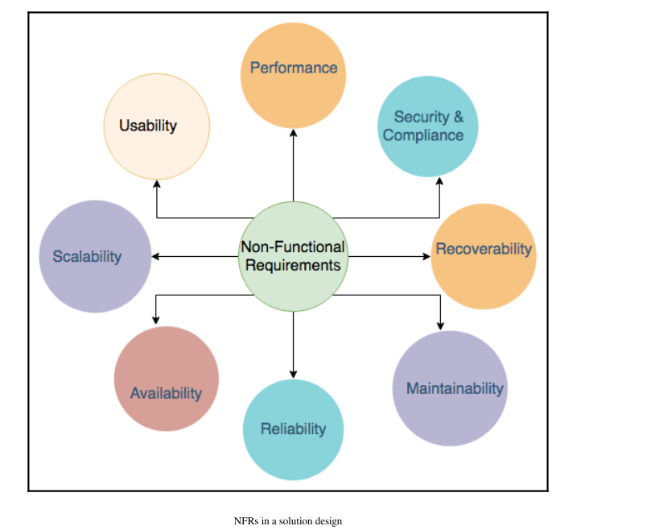
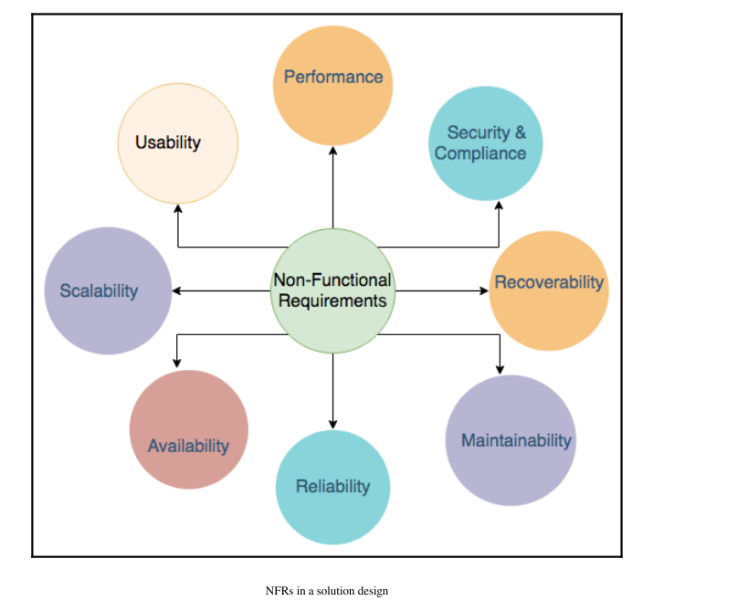

Solution Architect
The Meaning of Solution Architecture

The solution architecture in an organization

 

Priciples of solution architecture design
- Scaling workload
- Building resilient architecture
- Design for performance
- Using replaceable resources
- Think loose coupling
- Think service not server
- Using the right storage for the right need·Think data-driven design
- Overcoming constraints
- Mo(Must have)
- S(Should have)
- C(Could have)
- W(Wont have) MosCow
- Plan a minimum value product(MVP) for your customer.
- Adding security everywhere
- Automating everything
Cloud Migration and Hybrid Cloud Architecture

Solution architecture Design patterns
- Building an n-tier layered architecture
- Creating multi-tenant SaaS-based architecture
- Database level isolation
- Table level isolation
- Row level isolation
- Building stateless and stateful architecture designs·Understanding service-oriented architecture(SOA)
- Building serverless architecture
- Creating microservice architecture
- Building queue-based architecture
- Creating event-driven architecture
- Building cache-based architecture

- Understanding the circuit breaker pattern
- Implementing the bulkheads pattern
- Creating a floating IP pattern
- Deploying an application with a container

- Database handling in application architecture
- Avoiding anti-patterns in solution architecture
Performance Considerations

- block storage (SAN) dont store any metadata about file ,high-performance
- file storage (NAS) when it come to storing billions of files ,it might not be the right solution
- object storage (cloud data storage) unlimited scalability of storage
Architectural Reliability

Cost Consideration

Solution Architecture Document


Learning soft skills to become a better solution architect
- Acquiring pre-sales skills
- Communication and negotiation skill
- Listening and problem-solving skill
- ROI
- KPI
- Customer-facing skill
- Work with teams
- Presenting to C-level executives
- Taking ownership and accountability
- Defining strategy execution and Objectives and Key Results(OKRs)
- Thinking big
- Being flexible and adaptable
- Design thinking


- Emphasis on people: Collect feedback from various users and put yourself in their place to understand the problem from a different perspective.
- Cross-collaboration:Bring in people from different backgrounds to look for problems in a diversified way,and make sure solutions accommodate everyone’s needs.
- Think through the design process:Understand the overall design process,with clear goals and methods.
- Show and tell:Present your thoughts in visuals so that it will be easy to grasp for everyone in the room.
- Define the problem clearly:Create a well-defined and clear vision for a given challenge,which can help others understand clearly and encourage them to contribute more.
- Experiment often:Create a prototype to understand the implementation of the idea in real-life situations.Adopt a fail-fast strategy and experiment more often.
- Bias for action:The ultimate design to deliver a solution rather than just thinking.Be proactive in pushing forward and coming up with activities that can result in a workable solution.
- Being a builder by engaging in coding hands-on
- Becoming better with continuous learning
- Being a mentor to others
- Becoming a technology evangelist and thought leader